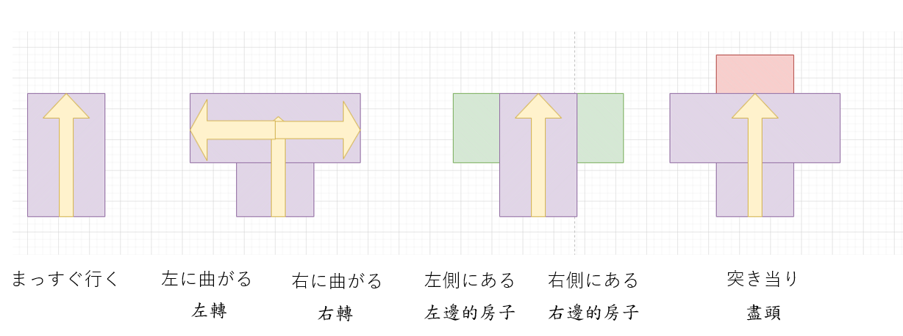

文型１
（このジーパンを）はいてみます。
試，試下...
例子：しってみます、やってみます、試験をうけってみます
例１）
客：この靴、はいてみてもいいですか。
店員：ええ、どうぞ。
例２）
A：母はうちで生け花教えているんです。
B：生け花ですか。いいですね。私も今度やってみたいづす。
例３）
チン：それは何ですか。
武：いなりずしです。おいしでよ。食べてみてください。
チン：ありがとうございます。いただきます。
文型２
少し短くしてください。
【令那件事情怎麽樣】
い形容詞： 大きい → 大きくする
な形容詞：きれい → きれいにする
例１）
A：前髪を短くしてください。
B：はい、わかりました。どのぐらい切りますか。
A：そうですね。５センチぐらい切ってください。
例２）
A：ちょっと寒いですね。
B：そうですね。エアコンを弱くしましょう。
例３）
A：すみません、テーブルの上をきれいにしてください。
B：はい。
文型３
子供がいなくなってしまいました。
【不想發生的事情-->發生了】
例１）（学生会館で）
ワン：先生、あの...。
先生：あ、わんさん、どうでしたんですか。
ワン： 部屋のかぎをなくしてしまったんです。
例２）
A：何を捜しているんですか。
B：消しゴムです。
今、落としてしまったんです。
例３）
店員：すみません。
お 皿を割ってしまいました。
店長：だいじょうぶですか。
けがをしませんでしたか。
例４）
昨日は財布を忘れてしまったので、
友達に金<を借りました。
文型４
私が試着している間、ここで待っていてください。
私が試着している間に、いなくなってしまったんです。
同時進行
例１）
電車に乗っている間、ずっと音楽を聞いていました。
例２）
友達が先生と話している間、私は研究室の外で待っていました。
例３）
夏休みの間、ずっと日本でアルバイトをします。
例４）
買い物をしている間に、財布を落としてしまいました。
例５）
弟がゲームをしている間に、僕は弟のケーキを食べました。
例６）
夏休みの間、北海道へ行きます。
文型５
赤いTシャツを着ています。
認識瞬間動詞
（駅で）
例１）
鈴木：マリーさんはどこでしょうか？
吉田：あ、あそこです。白い帽子をかぶっていますか。
鈴木：ああ、わかりました。マリーさん。
例２）
リー：あれ？ワンさん、
今日はめがねをかけていませんね。
わん：ええ。今日はコンタクトとレンズ
をしているんです。
例３）
Ａ：どの人が吉田さんですか。
Ｂ：白いワンピースを着て、ネックレスをしている人です。
文型６
ここをまっすぐ行くと、エスカレーターがございます。
一...就(if..then...)

例１）
Ａ：すみません、この辺に銀行はありますか。
Ｂ：はい、ここをまっすぐ行くと、左側にあります。
Ａ：どうもありがとうございました。
例２）
Ａ：あのう、受付はどこですか。
Ｂ：ここを右に曲がってまっすぐ行くと、右側にあります。
Ａ：右側ですね。ありがとうございました。
例３）（デパートで）
店員：いらっしゃいませ。
客：あのう、手洗いはどこですか。
店員：ここをまっすぐ行くと、エスカレーターがございます。
エスカレーターの所を左に曲がって少し行くと、
突き当たりにございます。
客：エスカレーターの所を左に曲がるんですね。
店員：はい。
客：どうも。